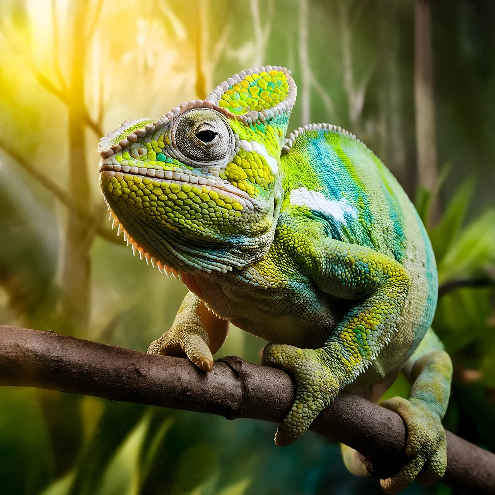

Los camaleones son reptiles fascinantes conocidos por su capacidad de cambiar de color, su lengua larga y pegajosa, y sus ojos que pueden moverse de manera independiente. Habitan principalmente en África y Madagascar, aunque también se encuentran en otras regiones tropicales. Su habilidad para camuflarse les permite adaptarse al entorno, comunicarse y regular su temperatura. Además, son excelentes trepadores gracias a sus patas prensiles y su cola enroscada.
Caracteristicas
Visión Estereoscópica
Pacíficas
Cambian de color